I'm a product designer with 3 years across B2B and B2C. I design calm, structured systems for complex products, and use AI to vibe-code my ideas before they're real.
I'm Mengqi — a designer who loves creative tools and the
small moments that make a product feel delightful.
Outside of design, I'm probably solving beta on a bouldering
wall, building weird little projects with code, shooting
through a disposable camera, or watching the sunset.
🧗 send the beta
📷 disposable cam
🌇 golden hour
Mengqi.jpg
1696 × 1749
Experience
Experiences that shaped me
Design Consultant - Pratt Digital Experiences Center
2025-2026
Product Design Intern - Age Brilliantly
2025
Teaching Assistant - UC Davis Psychology Department
2023
Founding Product Designer - Roastpic
2022-2024
UX Designer - University of California, Davis
2022-2023
Vibe coding project
The Council
A lightweight product experiment exploring how a council of
voices can help a user think through a question.
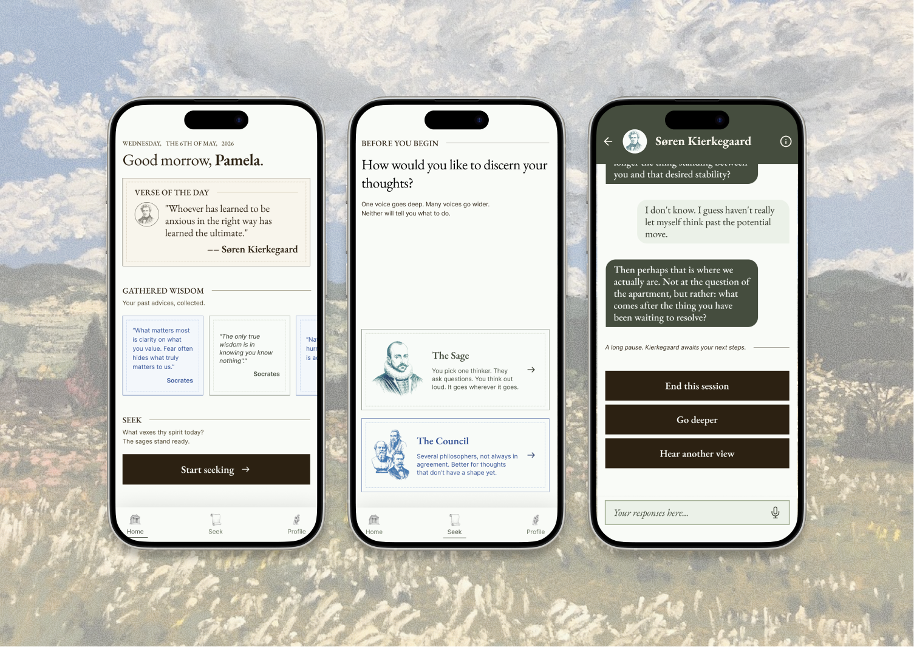
Prototype overview / 01
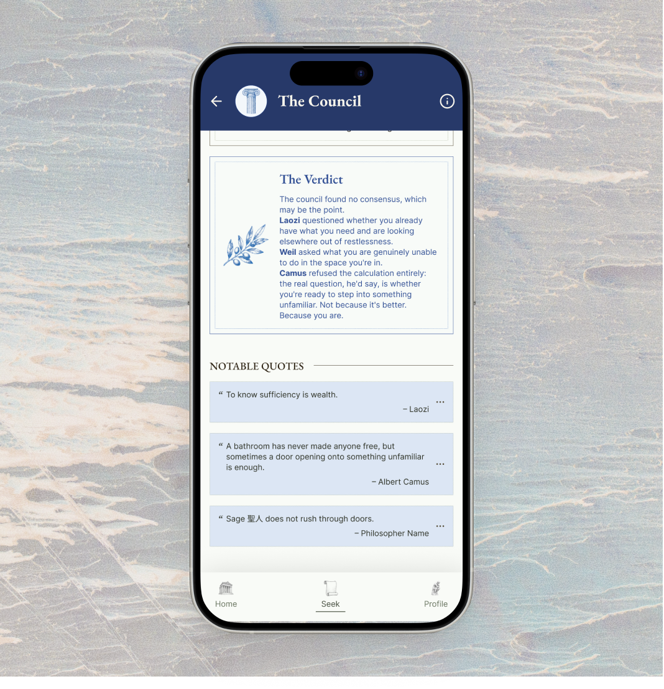
Verdict and saved wisdom / 02
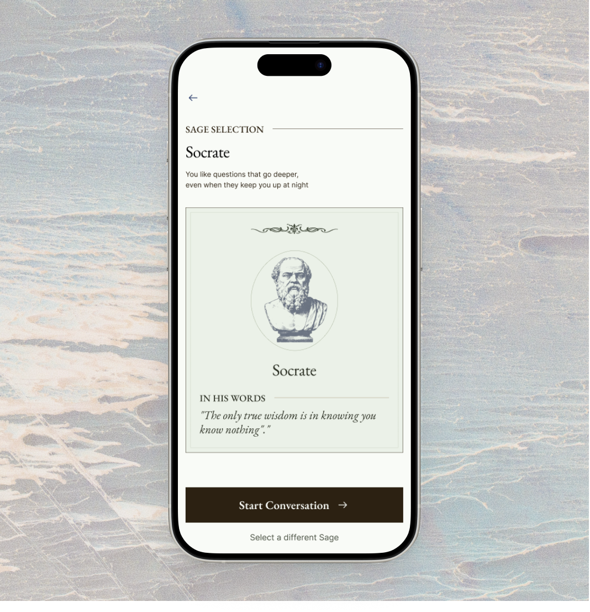
Sage selection / 03
Sunwalk / 01Sunny route planning / 02
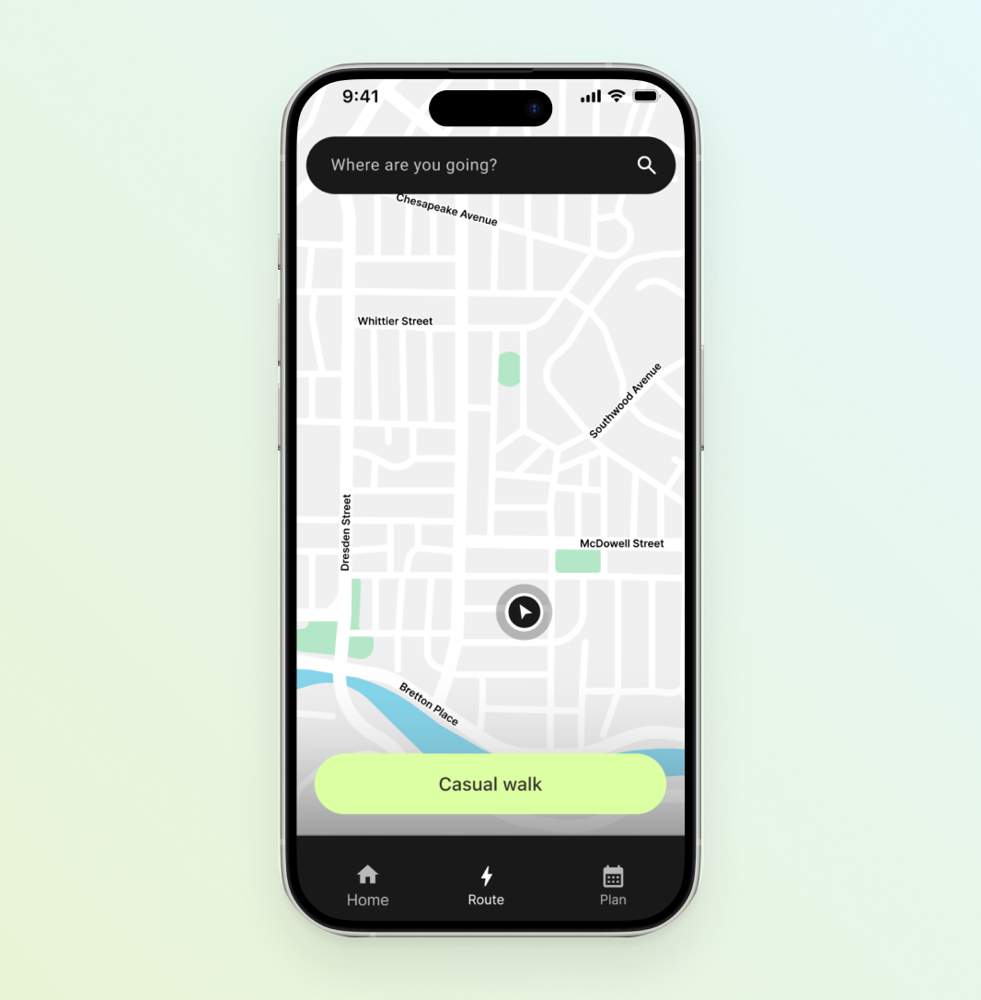
Map view / 03
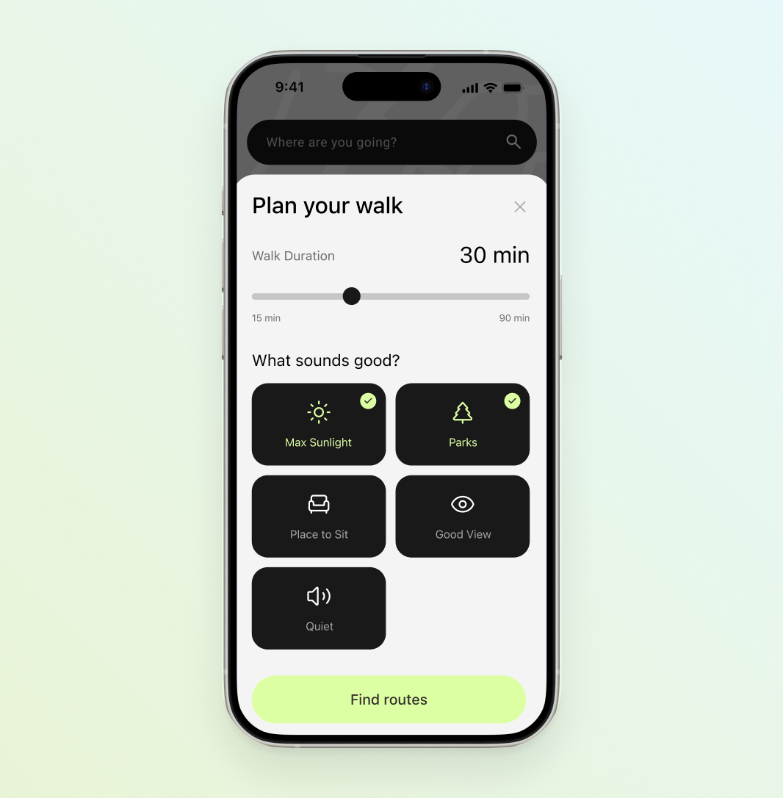
Prefrences setting / 04
Playlist mapping / 01
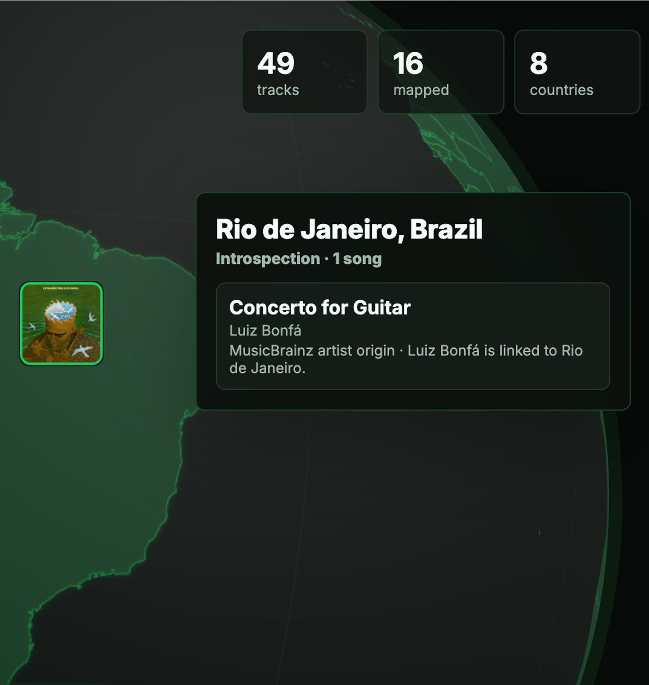
World map overview / 02
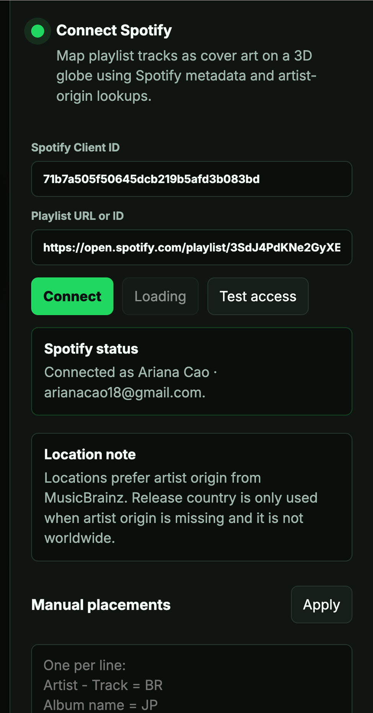
Mapped tracks / 03
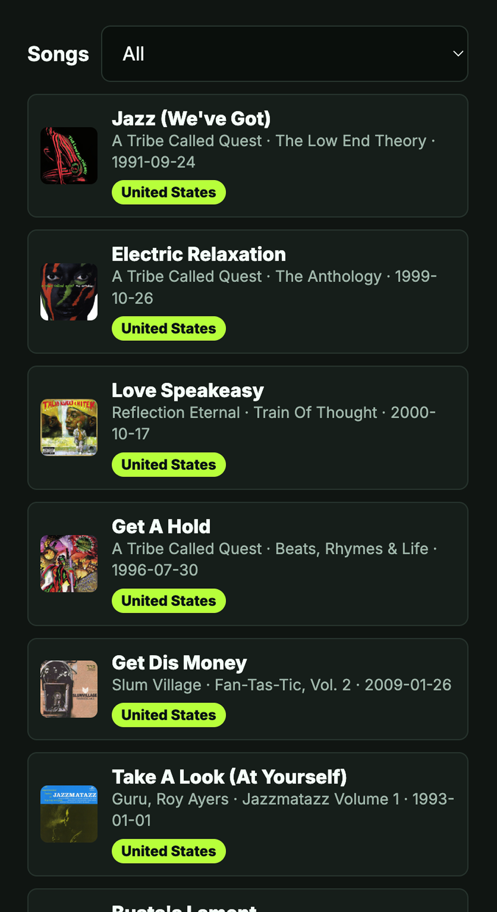
Origin confidence / 04
Project hero placeholder
Prototype overview / 01
Interface detail placeholder
Interaction detail / 02
Process visual placeholder
Process note / 03
Overview
The Council is a reflective AI prototype for people who are stuck
with a question but do not want a direct answer. Instead of
mirroring the user back to themselves, it invites multiple
philosophical perspectives into the conversation so users can
examine a dilemma from different angles.
People use AI when they are stuck, but they do not always want
answers.
The Council began with a simple tension: people ask AI for help
with work, life, and unnamed spirals, yet many do not want a
therapist, coach, or oracle. They want to see their situation from
different angles and reach their own understanding.
How might an AI experience help people think more clearly without
telling them what to think?
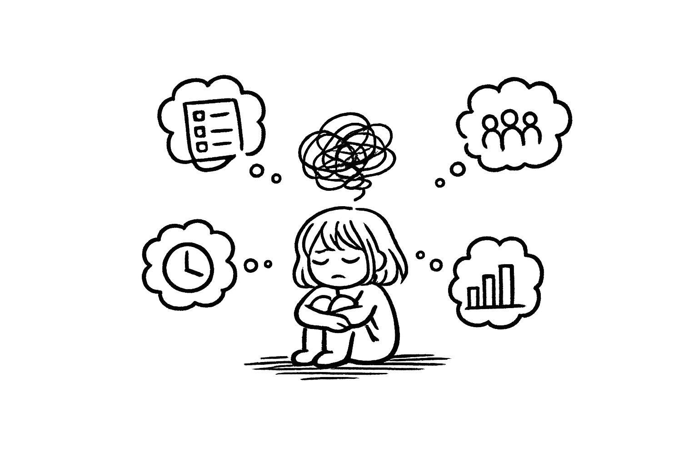
Introducing The Council
A place to think out loud and hear something unexpected.
Users bring a dilemma they have been circling, then meet it
through philosophical characters. Socrates, the Stoics, the
Absurdists, and others each respond with distinct rhythms,
obsessions, and useful friction.
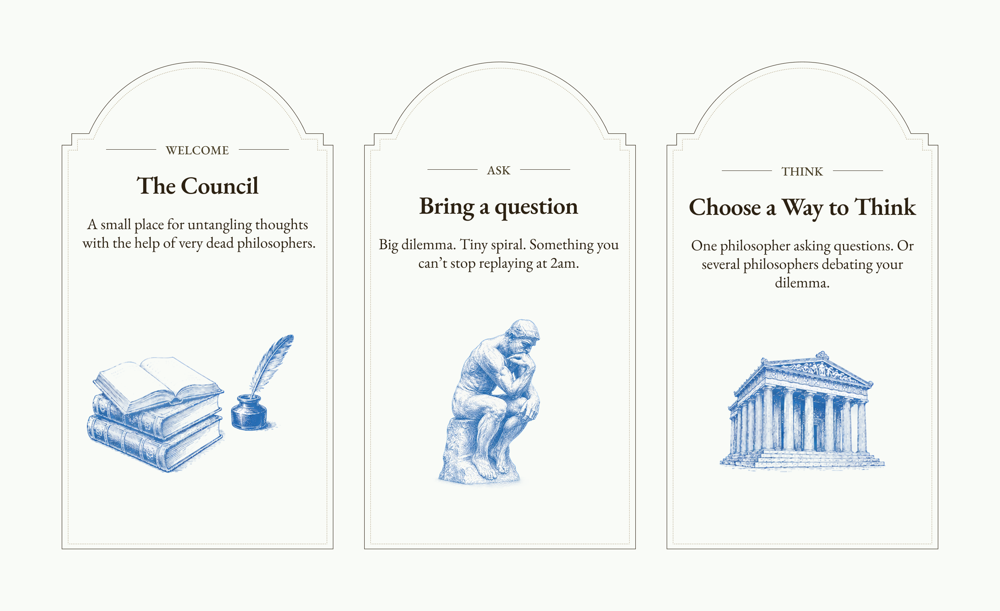
Research
The neutrality paradox
The opportunity was not to make AI more authoritative, but to make
its perspective intentionally situated and easier to push against.
Neutrality can feel safe.
Some users value AI because it does not bring social bias or a
personal agenda into difficult decisions.
Neutrality can also feel thin.
Others said advice from AI can feel generic because it lacks
lived experience, opinion, and texture.
The need for agency
Across early interviews, the strongest pattern was not a desire
for the AI to decide. People wanted help staying with a dilemma
long enough to reach their own conclusion.
“It is less about getting a clear answer, and more about finding
a way to see the situation differently through something that
feels relatable and meaningful.”
A second pattern was validation. Advice-seeking often began
after users had already formed a preference, but needed language,
friction, or perspective to understand why.
“I do not just want options. I would like it to help me commit
to one of them.”
Ideation
Not everyone wants to be challenged by a machine.
But they might take it from Socrates, Laozi, or Kierkegaard.
Philosopher personas made the same idea land differently
depending on who delivered it.
Our goal was to use AI to surface perspectives that felt
genuinely refreshing: not neutral advice, but distinct voices
that could spark reflection, critical thinking, and a little
productive resistance.
Prototype walkthrough
Two paths: one voice or many.
The entry asks users to begin with a question or a messy thought.
From there, they choose a Sage for a one-on-one reflective session
or a Council to watch several philosophers debate the dilemma.
01 / The sage
The Sage
A one-on-one path turns the conversation inward. The Sage
listens, asks, and slows the user down without resolving the
question too quickly.
02 / The council
The Council
The Council path makes disagreement visible. Philosophers
respond from different assumptions, giving the user a set of
lenses to accept, reject, or sit with.
03 / Quiz
Quiz
If the user does not know who to speak with, a short quiz
helps match them with a philosopher or mode of reflection
without turning the moment into onboarding.
04 / Output
Output
Instead of a final answer, the output becomes a quote,
verdict, or saved thought the user can return to later.
Conclusion
Meaning came from conditions, not conclusions.
The Council works by being a little strange, dry, and
deliberately uninterested in giving wellness-app advice. It
creates the conditions for users to think critically on their
own.
One question at a time keeps the interaction focused.
Vivid personas give users a specific lens to push against.
Sideways observations can be more useful than direct advice.
Overview
Sunwalk is a mobile prototype that helps people notice how much
sunlight they receive throughout the day, then nudges them toward
small outdoor moments when their body might need them most.
Built during a three-day hackathon, the project explores a simple
question: what if sunlight could feel as trackable and gently
actionable as steps?
Sunlight affects how we feel, but most of us do not notice it.
Imagine waking up tired, struggling to focus, and noticing your
mood feels lower than usual. Nothing seems obviously wrong. You
might blame stress, or assume you did not sleep well.
Sometimes the reason is simpler: you have not had enough
sunlight.
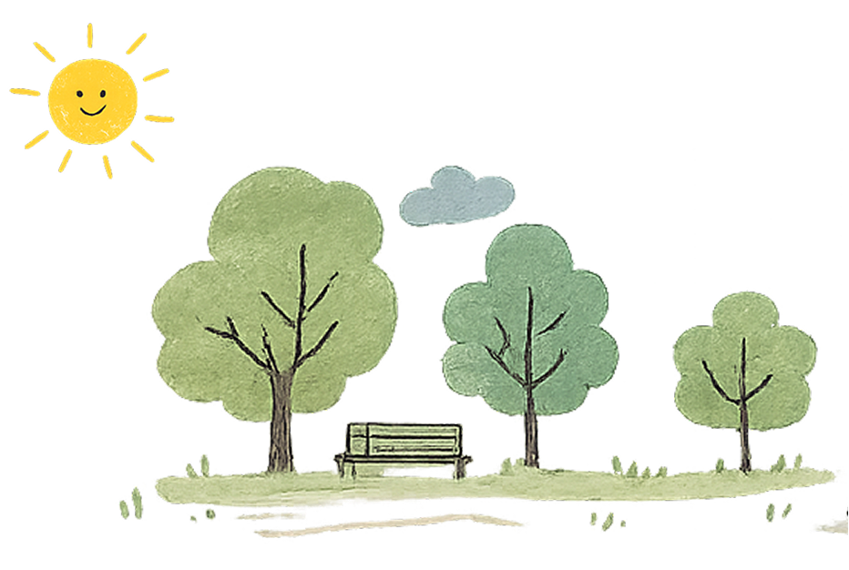
Research
People spend most of the day indoors, often without noticing.
42% of Americans
are vitamin D deficient. Sunlight is the body’s primary
source, and most people do not know they are low.
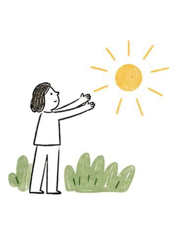
1 extra hour outside
can lower depression risk and raise self-reported happiness,
according to a large UK study.
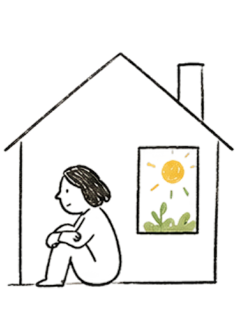
90% of our time
is spent indoors. We have quietly lost contact with something
our bodies depend on every day.
Design approach
What if you could sense your sunlight intake the way a fitness
tracker counts your steps?
The interface needed to feel gentle, not clinical. Instead of
turning sunlight into another performance score, Sunwalk frames
exposure as a daily rhythm: something to understand, plan around,
and return to with curiosity.
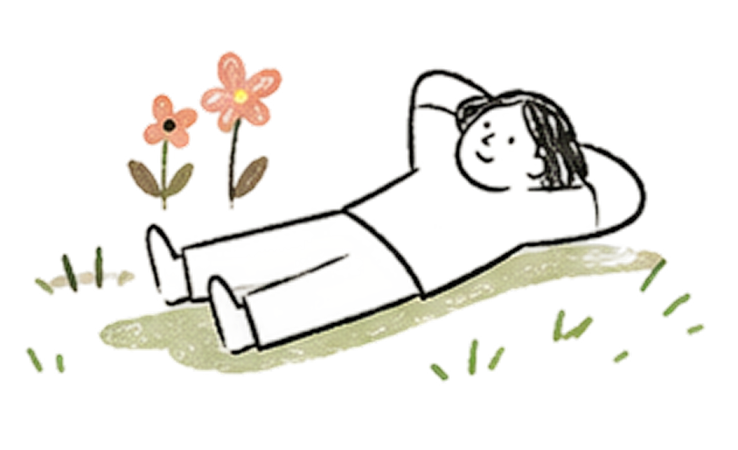
Solution
Introducing Sunwalk
An app that helps people understand how much sunlight they
receive throughout the day, and guides them to step outside when
they need it most.
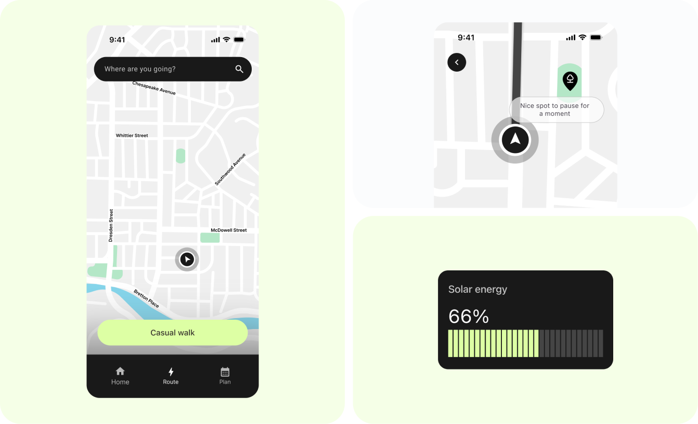
Solution
For Ariana, the walk home from the office is often the only
time spent outside all day. Recently, she has been trying to
get a bit more sunlight whenever possible.
Sunwalk helps decide which route home offers the best sunlight
along the way.
Solution
When New York is about to get a full week of snow, Sunwalk
helps notice the remaining sunny windows and plan a small
outdoor moment before they disappear.
Solution
Casual Walk encourages people to step outside, slow down, and
wander a little based on their mood and preferences.
Conclusion
Three days forced clarity.
Sunwalk taught me where AI-assisted building is genuinely useful:
generating UI, iterating copy, and moving from concept to
prototype without a traditional handoff.
With more time, I would return to the fundamentals: talk to real
users, test whether the sunlight metaphor lands, and give Casual
Walk the depth it deserves. AI can accelerate execution, but the
judgment calls are still the designer’s job.
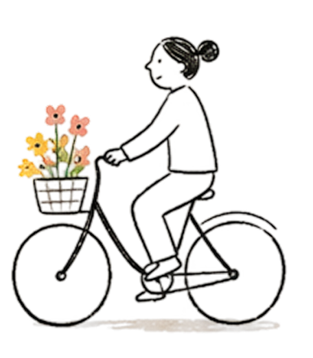
Overview
I love listening to music. I build playlists around mood and
scene, and the tracks I pull together always seem to come from
different corners of the world. That made me curious: where is my
favorite music actually from? Is the sound of a track connected to
where it came from?
That curiosity led me to build Soundmap, a tool that maps your
Spotify playlist onto a world map based on where each artist is
from.
What changed
Spotify does not expose artist origin data, so I had the agent
search for it live each time a playlist loads. Early results were
inconsistent, often picking up a featured collaborator instead of
the primary artist. I eventually scoped the search to MusicBrainz
and the main artist only.
When origin data is missing, the interface says which tracks
mapped successfully and which did not, so what appears on the map
stays accurate. Deployment is still in progress, and I will add
the live demo link once the Vercel formatting issues are resolved.
Overview
Placeholder copy for a concise project story. This section will
describe the initial idea, the constraint, and the moment the
prototype became useful enough to share.
What changed
Placeholder copy for design decisions, interface details, and
small interaction choices. The tone should stay lightweight and
readable, like a project note rather than a full case study.